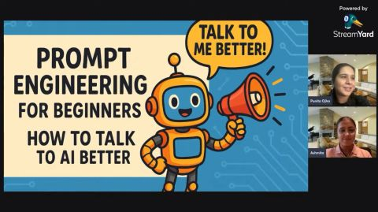

Hi everyone!
Ashmita Pandey · · Engineering Practices
Hi everyone! I'm very happy to share that I delivered my first talk on "Introduction to Prompt Engineering – How to Talk to AI Better" on May 18, 2025, during Brown Bag Session 1 organized by the Google Developers Group Udaipur. I’m truly grateful for this opportunity. A big thanks to Punita Ojha, shipra jain, and Dheeraj Joshi from the GDG team for their constant support and guidance, and to Deepak Babel Sir for always motivating me. Also, a huge shoutout to fellow speakers Charvi Bapna and Tanishq Pariwala, who shared amazing knowledge and insights—it was such an inspiring and enriching experience! This talk has significantly boosted my confidence, and I’m even more excited now to continue learning and contributing to the community. Check out my video on prompt engineering to get a quick gist of the session: https://lnkd.in/dAeT3RfY #PromptEngineering #GoogleDevelopersClub #AI #CommunityLearning #PublicSpeaking
